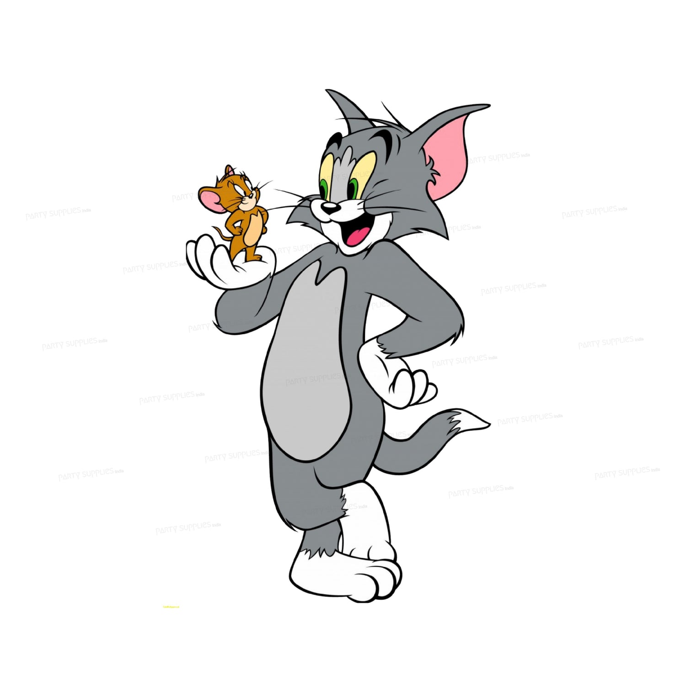

Childhood was the most beautiful time of our life. Cartoons were not just entertainment, they were emotions, friends, and memories. Click below and rediscover your favorite cartoon characters and their hidden real stories.

Tom and Jerry
The endless chase of friendship hidden behind fights.